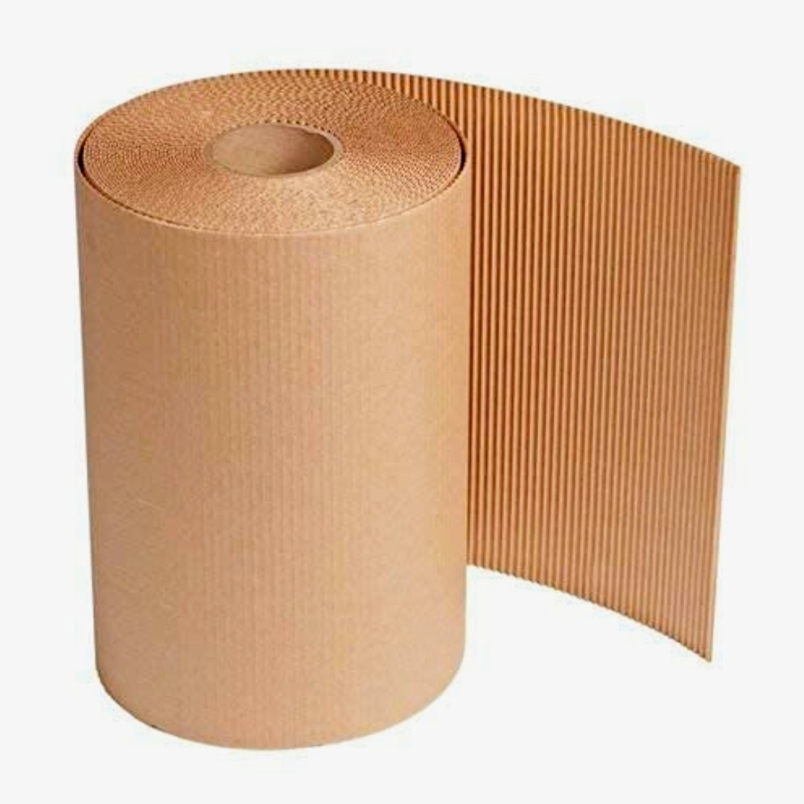
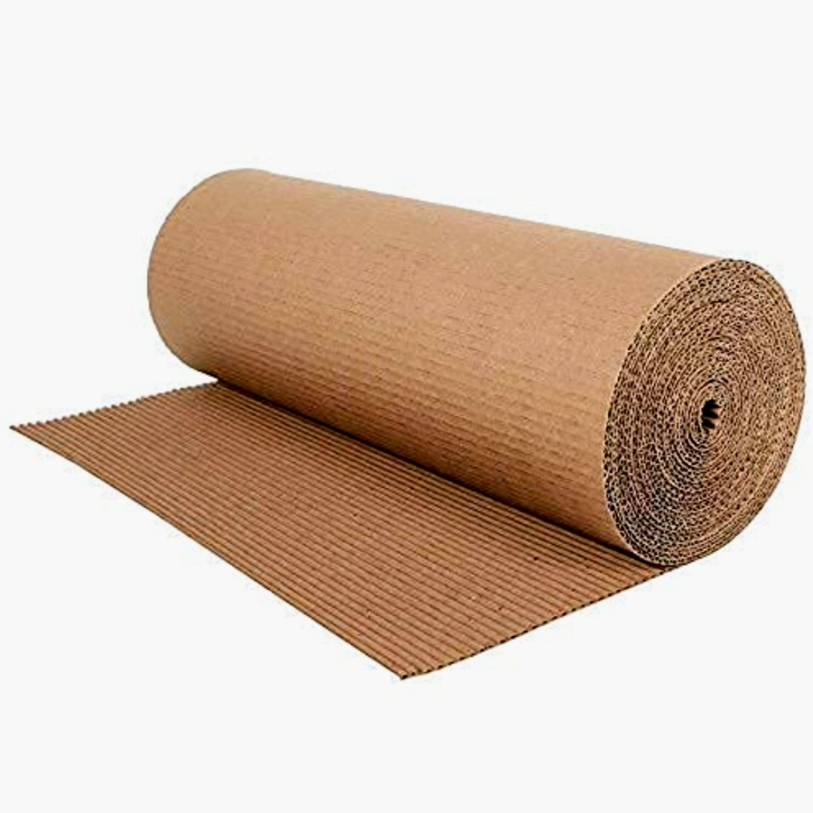
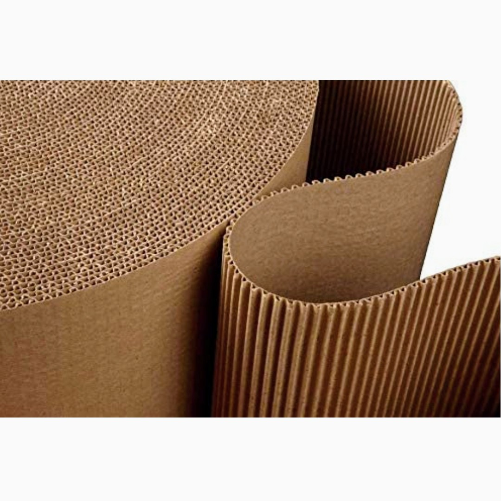
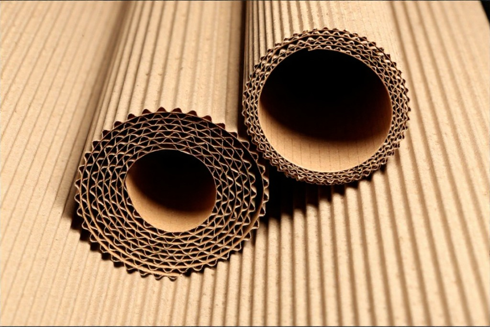
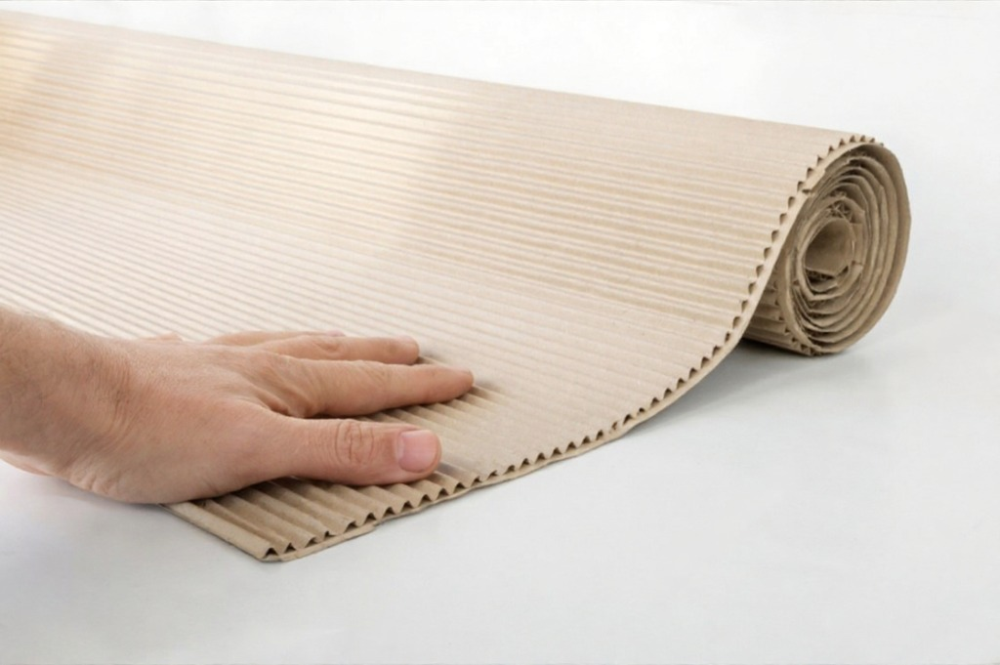
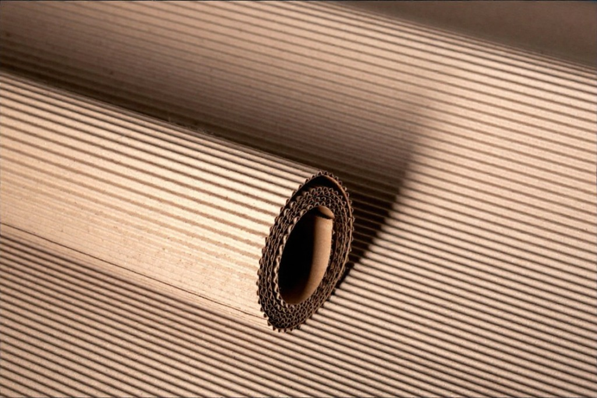

Product Overview
Corrugated Rolls are made from high-strength corrugated paper
and are widely used as a protective packaging material. They
provide excellent cushioning and surface protection for goods
during handling, storage, and transportation.
These rolls are flexible, easy to cut, and well-suited for
Indian packaging operations where manual wrapping and
cost-effective protection are essential.
Key Features
- Provides cushioning and impact protection
- Flexible and easy to wrap around products
- Protects surfaces from scratches and damage
- Lightweight and cost-effective packaging solution
- Eco-friendly and recyclable material
Specifications
- Material: Corrugated Paper Board
- Flute Type: Single face corrugation
- Roll Width: Standard and custom widths available
- Roll Length: As per requirement
- Colour: Brown
- Usage: Protective wrapping and cushioning
Applications & Use Cases
- Protective packaging for fragile goods
- Furniture and appliance wrapping
- Glass, ceramic, and metal product protection
- Warehousing and logistics operations
- Industrial and commercial packaging
Best Suited For
- Manual packing operations in factories and godowns
- Furniture, appliances, and surface-sensitive goods
- Short to medium distance transport with stacking
Selection Note
For Indian transport conditions, corrugated rolls are best
used as an inner protective layer. For long-distance or
rough handling, combine with bubble wrap or stretch film
for improved protection.
Commonly Used Along With
- Bubble Rolls for added cushioning
- BOPP Packing Tapes for sealing
- Stretch Film for outer wrapping
Product FAQs
-
Are corrugated rolls suitable for fragile items?
Yes. Corrugated rolls provide cushioning and surface protection,
making them suitable for fragile items when combined with proper packing.
-
Can corrugated rolls be used for long-distance transport?
For long-distance or rough handling conditions, corrugated rolls
should be used along with bubble wrap or stretch film for added safety.
-
What flute type is used in corrugated rolls?
These rolls typically use single-face corrugation, offering flexibility
and cushioning for wrapping applications.
-
Are corrugated rolls eco-friendly?
Yes. Corrugated rolls are made from paper-based materials and are
recyclable, making them an environmentally friendly packaging option.
-
Can corrugated rolls be cut to required sizes?
Yes. Corrugated rolls are easy to cut manually and can be sized
according to product dimensions during packing.
-
Are custom roll widths available?
Yes. Corrugated rolls can be supplied in custom widths and lengths
based on bulk or application requirements.